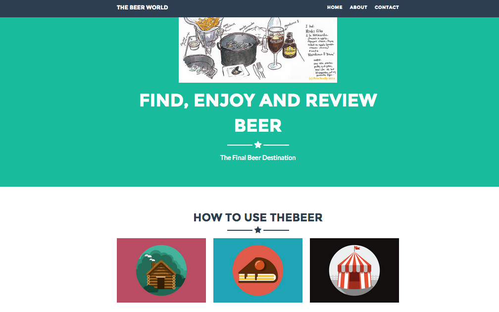

JSONP and SOP
Aug 6, 2015
Why can't I call 'http GET' request from front-end JavaScript?
Since the hackathon I've attended a few weeks back, I have this crazy idea in my head. No back-end, database but simple front-end based website. Calling http request to get information from other providers and render the data with simple javascript, jquery and HTML. So I download Bootstrap theme and get whole page set up like in 5 mins and then add a javascript file and start to build ajax ready to talk to Yelp API, Beer API and Pinterest API. But for some reason, it did't work. It didn't work not only with one API but all APIs from multiple API providers. Why this is happening to me.
JSONP or "JSON with padding" is a communication technique used in JavaScript programs running in web browsers to request data from a server in a different domain, something prohibited by typical web browsers because of the same-origin policy(SOP). JSONP takes advantage of the fact that browsers do not enforce the same-origin policy on script tags. Since it works through script tags, JSONP supports only the GET request method(This is suck, right?). There are significant security implications and risks associated to using JSONP unless you have no choice, CORS is usually the better choice.
So here is how to use JSONP. It's pretty easy but one thing to remember. There is no guarantee to work. Many site does not allow to use JSONP call request. After +50 hours of struggling, I realize the all of my API providers are not support JSONP method.
Pretty easy, huh? This method is exactly same as the following script tag way
So why SOP exists and why we care?
Naive deployments of JSONP are subject to cross-site request forgery (CSRF or XSRF) attacks.[11] Because the HTML script tag does not respect the same-origin policy in web browser implementations, a malicious page can request and obtain JSON data belonging to another site. This will allow the JSON-encoded data to be evaluated in the context of the malicious page, possibly divulging passwords or other sensitive data if the user is currently logged into the other site.
This is problematic only if the JSON-encoded data contains sensitive information which should not be disclosed to a third party, and the server depends on the same-origin policy of the browser to block the delivery of the data in the case of an unauthorized request. This security dependency on the browser's same-origin policy can be avoided by the server determining if the request is authorized and only putting the data on the wire if it is. Exclusive use of cookies for determining if a request is authorized should be avoided as it is subject to cross-site request forgery.